Working with the Attributes Table
This page should teach you to do basic table operations in QGIS, meaning how to open the Attributes Table, how to add and remove columns and using all the other tools available inside the table viewer in QGIS.
Back To Basic Concepts
Back To Homepage
How To Open The Attributes Table
You have three easy ways to open the Attributes Table:
- Right click the layer you want to open, and select Open Attribute Table.
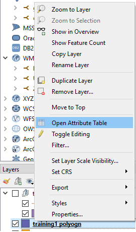 - In the toolbar under the menus click on the table
 icon and the attribute table of the current working layer will open.
icon and the attribute table of the current working layer will open.
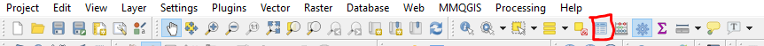 - Select a working table and press F6, thats it.
Adding a New Column
To add a new column to your layer you should first enable editing on the layer.
to do this click on the left-most button of the toolbar which looks like a pencil  and is located here:
and is located here:

Now that the layer is editable, you can either click the New Field (Ctrl+W) button 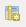 which is located here:

This will add an empty field.
Or the Field Calculator button (Ctrl+I) 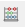 which is located here:

If you chose to add an empty field, all you have to do now is select the name, type of field you want, its length,
which can limit you in the future, so try to pick a length which you know should cover all possible data. If you are choosing to use a Decimal Number,
make sure you specify the number of digits to appear after the decimal point in the percision box, this will count as part of the length you specify.
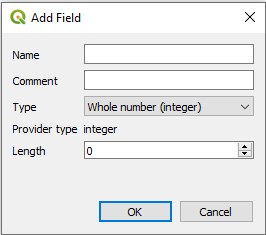
If you chose to calculate a New field, you will face this window:
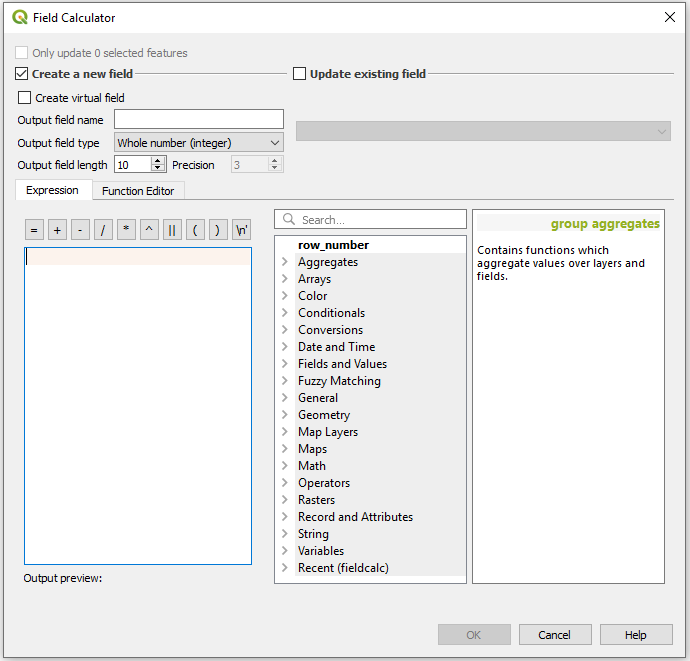
Here you will first have to choose wether to create a new field or update an existing one.
Assuming we are adding a new field, here too you will need to enter a field name, type and length.
now you can either keep the formula blank or use one of the values on the side, for example a calculation of the row number times 2, which i performed by clicking on the row number in the options and typing "* 2"
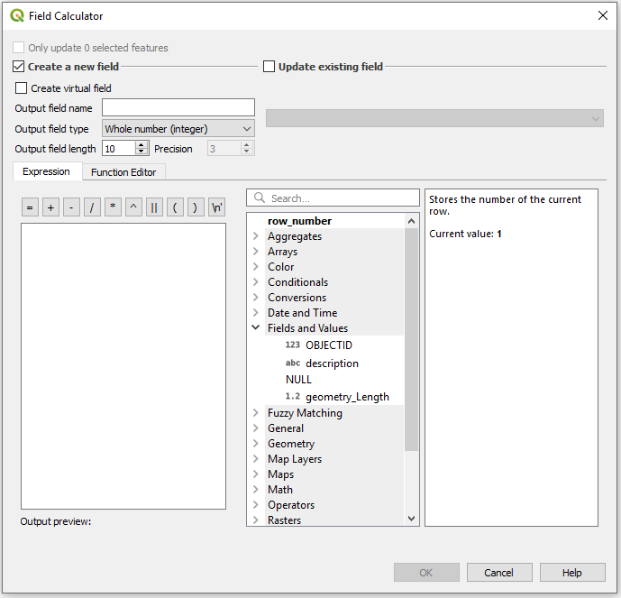
Another formula which might be useful for you is getting the "WKT" or Well Known Text description of your geometry.
This can be used like a GeoJSON geometry object or for calculations with Spatial SQL (PostGIS will read this as geometry).
The formula is
geom_to_wkt( $geometry )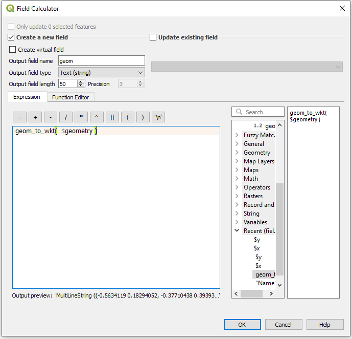
And thats it, Simple and easy to use, and now you know how to do that in Open Source. Go back to the top
Removing Columns
To remove a field from your table you also have to get into editing mode for that layer.
to do this click on the left-most button of the toolbar which looks like a pencil and is located here:
Now that the layer is editable, you can click the 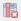 Delete Field button or just enter Ctrl+L.
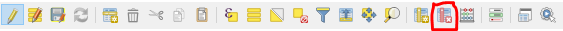
You will now have this window pop up.

To select a field to remove simply click on its name. If you want to select multiple fields simply click them too, no need to hold Shift or Ctrl.
If you want to De-Selct a field, simply click it again.
Once you are done, click OK.
And thats it, Simple and easy to use, and now you know how to do that in Open Source.
Adittional Operations
Naturally there are other operations available on the attributes table, this will be a quick review of the available vuttons and their purpose and uses.
A Detailed version of this list can be found in the official QGIS Documentation Here, it is however only updated to version 2.18, though little should have changed.
The buttons below are listed by toolbar and from left to right or top to bottom, depending on the toolbar.
- Top Toolbar:
- Toggle editing mode (Ctrl+E)
- Toggle multi edit mode 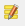
- Save Edits 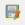 (Ctrl+S)
- Reload the table
- Add feature 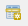 (Add new geometryless feature)
- Delete selected features 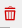
- Cut selected rows to clipboard 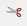 (Ctrl+X)
- Copy selected rows to clipboard 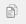 (Ctrl+C)
- Paste features from clipboard 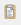 (Ctrl+V)
- Select features using an Expression 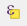
- Select All 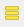 (Ctrl+A)
- Invert selection 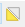 (Ctrl+R)
- Deselect all 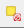 (Ctrl+Shift+A)
- Filter/Select features using form 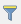 (Ctrl+F)
- Move selected to top 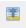
- Pan map to the selected rows 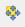 (Ctrl+P)
- Zoom map to the selected rows
 (Ctrl+J)
(Ctrl+J) - New field (Ctrl+W)
- Delete field (Ctrl+L)
- Open field calculator (Ctrl+I)
- Conditional formatting 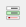
- Dock Attribute Table 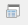
- Actions 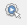 (more about actions can be found here)
- Toggle editing mode
- Bottom Left Tools:
- Bottom Right Tools: